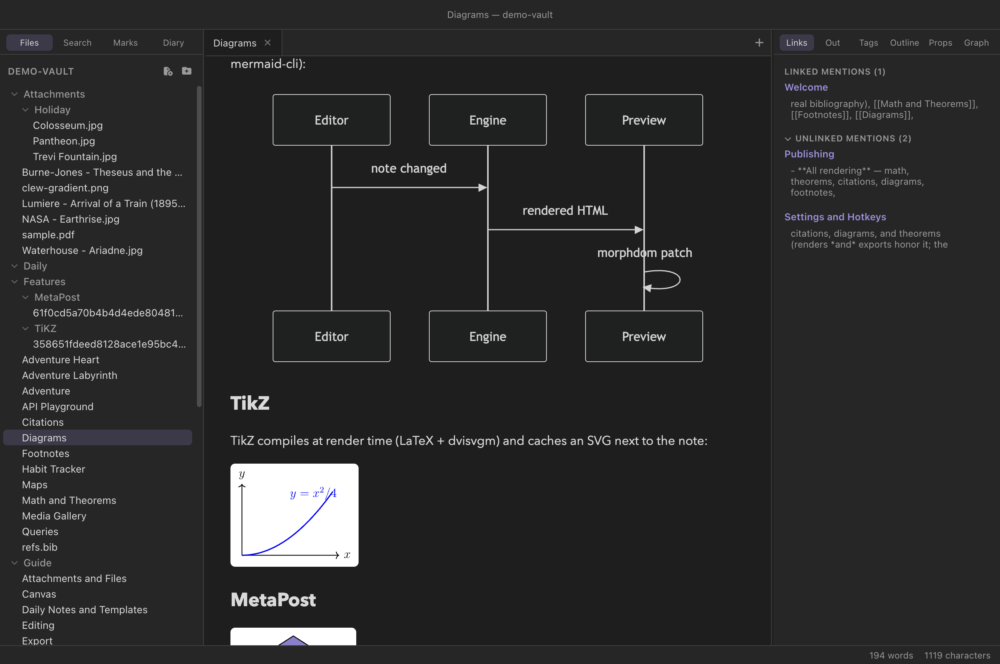

Reading mode
Diagrams
Clew draws diagrams from text in two quite different ways. Mermaid diagrams — flowcharts, sequence diagrams, and the rest of mermaid's catalogue — render instantly in the preview and follow the app's light and dark themes. TikZ and MetaPost figures go further: the note is handed to a real TeX toolchain on your machine, compiled, and the resulting vector graphic cached next to the note — publication-grade figures, living as plain text in a Markdown file.
Mermaid
The quickest way to a diagram is the fence Obsidian users already know:
You write
```mermaid
graph LR
A[Welcome] --> B[Clew Design]
A --> C[Dialect Demo]
C --> B
B --> D{{Graph view}}
```Reading mode renders it client-side with a bundled copy of mermaid — no network involved. Anything mermaid can draw is available: flowcharts, sequence diagrams, state and class diagrams, Gantt charts, pie charts, and the rest of its steadily growing catalogue. A sequence diagram, for instance:
You write
```mermaid
sequenceDiagram
Editor->>Engine: note changed
Engine->>Preview: rendered HTML
Preview->>Preview: morphdom patch
```
The ```mermaid fence is not native jmarkdown — it is an
Obsidian-compatibility extension Clew adds to the engine, precisely so
vaults written in Obsidian render their diagrams unchanged. The
engine's own spellings work too, as a container directive or a block
environment:
You write (native forms)
:::mermaid
graph TD
idea --> note --> essay
:::
@begin(mermaid)
graph TD
idea --> note --> essay
@end(mermaid)
In the preview all three spellings look identical. The difference
appears at export time: the native forms can
be rasterized for LaTeX and PDF output through the mermaid CLI
(mmdc), while the compatibility fence renders in HTML
only and exports to LaTeX as nothing. If you expect a note to become a
PDF, prefer the native forms. (When mmdc is not
installed, a LaTeX export skips the diagram with a one-line hint
rather than failing.)
Mermaid diagrams are theme-aware: Clew initializes mermaid with a theme matching the app — its default light theme in light mode, its dark theme in dark mode — and when you switch themes, every diagram on the page is re-rendered from its source so the colors follow. You never end up with a light-background diagram floating on a dark page.

TikZ
TikZ is LaTeX's drawing language — the standard for figures in
mathematical and scientific publishing. A TikZ figure in a note is
written as a block environment holding an ordinary
tikzpicture:
You write
@begin(TiKZ)
\begin{tikzpicture}[scale=1.1]
\draw[thick,->] (0,0) -- (3,0) node[right] {$x$};
\draw[thick,->] (0,0) -- (0,2.2) node[above] {$y$};
\draw[blue,very thick,domain=0:2.8,smooth] plot (\x, {0.25*\x*\x});
\node[blue] at (2.2,1.9) {$y = x^2/4$};
\end{tikzpicture}
@end(TiKZ)
Note the capitalization: the environment is spelled
TiKZ. The container-directive spelling
:::TiKZ … ::: is equivalent. When the note renders, Clew
does what a LaTeX author would do by hand: it wraps the picture in a
minimal standalone document, compiles it with lualatex,
converts the result to a vector SVG with dvisvgm, and
embeds the SVG in the page. Nothing is approximated — the figure in
your note is the figure LaTeX draws, TeX fonts, math labels and all.
A generous set of TikZ libraries is preloaded —
positioning, shapes, calc,
fit, matrix, trees,
graphs, arrows.meta, the
decorations families, intersections,
patterns, backgrounds, and more — so typical
figures need no preamble of their own.
MetaPost
MetaPost, the drawing sibling of TeX's METAFONT, is available the same way:
You write
@begin(metapost)
beginfig(1);
path tri; tri := (0,0)--(70,45)--(140,0)--cycle;
fill tri withcolor (0.55,0.5,0.8);
draw tri withpen pencircle scaled 1.2;
endfig;
end.
@end(metapost)
The source is compiled by mpost directly to SVG. A file
with several beginfig blocks produces several images, one
after another; and a bare body of drawing commands, without the
beginfig/end scaffolding, is wrapped into a
compilable program for you. Unlike TikZ there is no
::: spelling — @begin(metapost) is the only
form.
Compilation and caching
Shelling out to LaTeX on every keystroke would be unusable, so
compiled figures are cached by content. Each TikZ
block's source is hashed, and the compiled SVG is written to a
TiKZ/ folder next to the note, named by that hash;
MetaPost figures go to a MetaPost/ folder the same way.
On every subsequent render — including the re-render after each edit
elsewhere in the note — the SVG already exists and is embedded with no
compile at all. Only when you change the diagram's own source does the
hash change and a fresh compile run. The demo vault ships with these
folders populated (Features/TiKZ/,
Features/MetaPost/), which is why its diagrams appear
instantly on first open.
Because the cache is just SVG files sitting beside the note, it travels with the vault: sync or commit those folders and the figures display on machines that have no TeX installed at all — a compile happens only where a figure is authored or changed.
Four attributes tune the embedding, written in the environment's attribute block:
| Attribute | Effect |
|---|---|
scale=1.5 | Scale the embedded image (CSS transform) |
width=300px | Set the embedded image's width instead |
embed | Inline the SVG as a data URI rather than referencing the cached file |
empty-cache | Delete the cache folder's contents before compiling (a reset switch) |
You write
@begin(TiKZ){scale=1.5}
…
@end(TiKZ)The TeX toolchain
TikZ and MetaPost are honest about what they are: real TeX, which
means a real TeX installation. Everything needed —
lualatex, dvisvgm, mpost —
ships with the standard distributions: TeX Live on Linux and
Windows, MacTeX on macOS. Clew looks for the tools on your
PATH and, because an app launched from the macOS dock
does not inherit your shell's PATH, additionally checks
the usual locations (/Library/TeX/texbin,
/opt/homebrew/bin, /usr/local/bin). On
Windows the TeX installer puts the tools on PATH itself.
So in practice: install MacTeX or TeX Live normally, and it
works.
Without a TeX installation nothing else about Clew changes — mermaid still renders, since it never leaves the browser — but a TikZ or MetaPost block whose SVG is not already cached cannot compile. The figure's place in the note is taken by an inline error box ("Error processing TikZ diagram") rather than a broken page, and for TikZ the box carries a Show Error Log button that opens the full LaTeX log — which is also exactly where to look when a figure fails for the ordinary reason, a typo in the TikZ code.
empty-cache to its attribute block for one render to
force a clean rebuild, then remove it.
Diagrams in export and publishing
In LaTeX and PDF export, TikZ figures are
not embedded as images at all — the tikzpicture source
passes through natively, so the print figure is drawn by the same
engine as the rest of the document, in the document's own fonts.
MetaPost figures are compiled and included as vector graphics, and
mermaid's native forms rasterize through mmdc as
described above. When a whole vault is
published as a website, the cache
folders are copied with everything else — the site export preserves
every non-note file in place — so the published pages show the same
figures without any TeX on the server. A single note exported to HTML
references its TiKZ/ and MetaPost/ folders
by relative path, so keep the exported page next to the note, or copy
the folders along with it.
```mermaid fence renders in Obsidian too — that is
why Clew supports it — so mermaid diagrams round-trip between the two
apps. Everything else in this chapter is Clew-only:
:::mermaid, @begin(mermaid), TikZ, and
MetaPost appear in Obsidian as the literal block text. The
TiKZ/ and MetaPost/ cache folders are
ordinary folders of SVG files that Obsidian lists but does not touch.
Reference
| Diagram | Syntax | Rendered by | Needs |
|---|---|---|---|
| Mermaid (Obsidian-compatible) | ```mermaid … ``` | Bundled mermaid, in the preview; not exported to LaTeX | Nothing |
| Mermaid (native) | :::mermaid … ::: or @begin(mermaid) … @end(mermaid) | Bundled mermaid; rasterized via mmdc for LaTeX/PDF | mmdc for print only |
| TikZ | @begin(TiKZ) … @end(TiKZ) or :::TiKZ … ::: | lualatex + dvisvgm → SVG cached in TiKZ/; native in LaTeX export | TeX installation |
| MetaPost | @begin(metapost) … @end(metapost) | mpost → SVG cached in MetaPost/ | TeX installation |
| Attribute (TikZ and MetaPost) | Effect |
|---|---|
scale= | Scale the embedded SVG |
width= | Set an explicit width |
embed | Inline the SVG as a data URI |
empty-cache | Clear the cache folder before compiling |
See also
- How rendering works — the render pipeline, and why cached figures survive re-renders untouched.
- Math and theorems — the same TeX toolchain, pointed at equations.
- Interactive maps — the other kind of rendered block, live rather than compiled.
- Exporting notes and Publishing as a website — where your diagrams go next.
- The canvas — for freehand diagrams drawn by hand rather than declared in text.